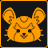

Overwatch Lore
For more information, the official website has bios for all the heroes. For more in-depth bios (pulling from not only the links below, but also dev comments, etc.), I recommend this wiki.

- 
- All
- Videos
- Blog
- Comics
- Tweets
- Overwatch Cinematic Trailer
- Tracer Origin Story
Tracer's Origin Story was shown at Blizzcon 2014 and is not on the official YouTube channel.
- Strange lights sighted over decommissioned Watchpoint
- What caused one weightlifting world champ hopeful to give up fame and glory?
- Vigilante justice—is it vital in a post-Overwatch world?
- Security breach reported at former Overwatch base in Colorado
- Experimental Weapon Stolen from Watchpoint: Grand Mesa
- Who is "Soldier: 76?"
- Fading Glory: On the Trail of Jack Morrison
- Soldier: 76 Origin Story
- Visit Numbani
- Lúcio Brings Music to Life with Synaesthesia World Tour
- Volskaya Industries CEO announces increased mech production
- If you have any information on the whereabouts of these fugitives
- Evidence recovered from audacious Banco de Dorado robbery
- A Moment in Crime Special Report: “The Junkers”
- 小美的冒险日记 (Mei’s Adventures)
- We Are Overwatch
- Recall
- Alive
- McCree: Train HopperAnimated version
- Reinhardt: Dragon SlayerAnimated version
- Are You with Us?
- Junkrat & Roadhog: Going LegitAnimated version
- Dragons
- Symmetra: A Better WorldAnimated version
- Lumérico Vision for Mexico Unveiled, but Threats to Safety and Security Remain
- Hero
- Pharah: Mission StatementAnimated version
- Torbjörn: DestroyerAnimated version
- Overwatch Is Back: Uncertainty and Hope After UN Confirms Vigilante Activity
- Communications Records of Ziegler, A.
- Ana Origin Story
- Ana: LegacyAnimated version
- Ana: Old SoldiersAnimated version
- The Last Bastion
- Junkrat: JunkensteinAnimated version
- Sombra ARG
I decided to place this directly before the majority of the Sombra reveal, but as the wiki says, it was ongoing from before Ana's introduction right up to the official reveal with her origin story video.
- Lumérico Revelations: CEO Guillermo Portero Under Fire
- LumériCo network security breach underway
- Lumérico CEO Steps Down
- Sombra Origin Story
- Infiltration
- Tracer: ReflectionsAnimated version
- Oasis Travel Tips
- Overwatch Tapestry: Winston’s Journey to the WestAnimated version
- An Interview with Inventor Efi Oladele
- OR15 defense units destroyed in confrontation with unidentified assailant at Numbani airport
- Genius grant recipient and Numbani local Efi Oladele posts curious image on her holovid channel
- Orisa Origin Story
- Bastion: BinaryAnimated version
- Initiating archive declassification…
- Tracer: UprisingAnimated version
- King’s Row Uprising Origin Story
- New Details Emerge About Possible Fate of Horizon Lunar Colony
- Horizon Lunar Colony
- Talon Involvement Confirmed in Previous Attack on Helix Facility
- Doomfist Origin Story
- Doomfist: MasqueradeAnimated version
- Junkertown: The Plan
- Rise and Shine
- Junkertown: Wasted LandAnimated version
All of the other comics are prepended by a character name — Wasted Land has “Roadhog” in the list of issues, but uses “Junkertown” everywhere else.
- Zarya: SearchingAnimated version
- An Overwatch Tale: The Return of Junkenstein
- Honor and Glory
- Moira Origin Story
- After-Action Report: Operation “WHITE DOME”
- Overwatch Digital Update: Yeti HuntAnimated version
- Story Update: A Letter from Torbjörn to His Wife
- “I'll knock some sense into you!”
- “Last minute check! Everyone squared away?”
- Brigitte Origin Story
- Story Update: Brigitte Q&A
- Overwatch Officials Respond to Attack on Oslo Facility
- Retribution
I have no damn clue why this is the only comic that isn't animated and is just a PDF.
- Retribution Debrief – Reyes
- Retribution Debrief – McCree
- Retribution cinematics
The Retribution cinematics were in-game only and are not on the official YouTube channel.
- Venice Memorandum Declassification
- Retribution Debrief – Genji
- Retribution Debrief – Moira
- Calm before the storm
- Rolling through
- The champion revealed
- Wrecking Ball Origin Story
- Shooting Star
- ReunionPost-credits scene
The Reunion post-credit scene was shown at Blizzcon 2018 and is not on the official YouTube channel.
- Ashe Origin Story
- Bastet
- Unauthorized Access Detected...
- Subject: Cuerva Strike Team - Log Recovered
- Bon Voyage: Paris Travel Guide
- Baptiste Origin Story
- Baptiste - Developer Q&A Answers
- How Don Rumbotico's international fame is slowly erasing its founders from the narrative
- Target: Located
- Storm Rising cinematics
The Storm Rising cinematics were in-game only and are not on the official YouTube channel.
- Storm Rising Intel Examination – Maximilien
- What You Left Behind
- What is that melody?
- Sigma Origin Story
- Zero Hour
eriyu
thanks to /u/DoctorDeadeye for most of the tweet links!